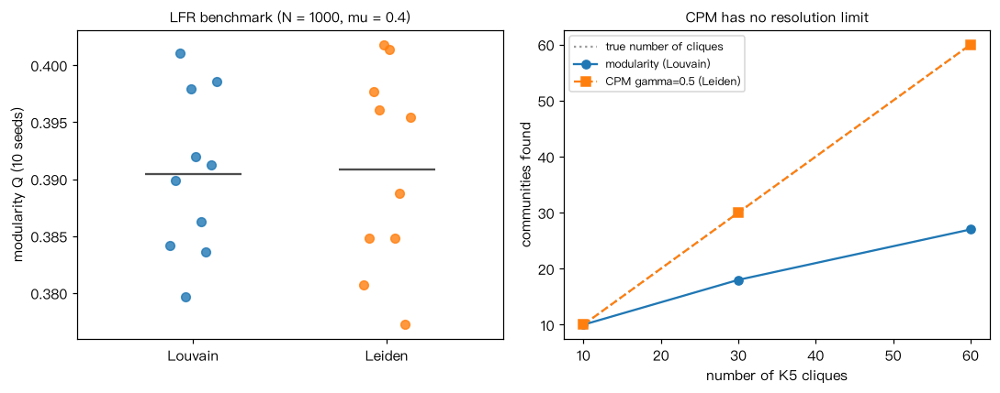

Example10 / 15
Leiden 算法、连通性检查与常数 Potts 模型（CPM）
- 在 LFR 基准网络上用 Louvain 与 Leiden（目标函数取模块度）各运行 10 个种子， 比较 Q 的均值与范围，并检查每个社团的诱导子图是否连通（Leiden 在理论上保证连通，Louvain 不保证）。
- 在“K5 团组成的环”上比较模块度（γ=1）与 CPM（分辨率 γ=0.5）： CPM 的质量函数 H = Σ_c [ e_c - γ·n_c(n_c-1)/2 ] 不含全网边数 m，不受分辨率极限影响。 输出：(a) 两者 Q 接近、Leiden 略高或相当，均无不连通社团（不连通是 Louvain 的最坏情形，而非常态）；
- 团数增加到 30、60 时模块度开始合并相邻团，CPM 始终给出每团一个社团。 注意：networkx 的 leiden_communities 默认 metric=“cpm”、resolution=1，对无权网络几乎只得到孤点，用模块度时须显式指定。
Output输出图

Output文字输出
(a) Louvain: Q = 0.3904 [0.3797, 0.4011]，社团数 12–15，不连通社团总数 0 (a) Leiden : Q = 0.3909 [0.3772, 0.4018]，社团数 13–16，不连通社团总数 0 (b) 10 个 K5：模块度(Louvain) 得 10 个社团；CPM(γ=0.5, Leiden) 得 10 个社团 (b) 30 个 K5：模块度(Louvain) 得 18 个社团；CPM(γ=0.5, Leiden) 得 30 个社团 (b) 60 个 K5：模块度(Louvain) 得 27 个社团；CPM(γ=0.5, Leiden) 得 60 个社团
Code代码
# (a) 在 LFR 基准网络上用 Louvain 与 Leiden（目标函数取模块度）各运行 10 个种子，
# 比较 Q 的均值与范围，并检查每个社团的诱导子图是否连通（Leiden 在理论上保证连通，Louvain 不保证）。
# (b) 在“K5 团组成的环”上比较模块度（γ=1）与 CPM（分辨率 γ=0.5）：
# CPM 的质量函数 H = Σ_c [ e_c - γ·n_c(n_c-1)/2 ] 不含全网边数 m，不受分辨率极限影响。
# 输出：(a) 两者 Q 接近、Leiden 略高或相当，均无不连通社团（不连通是 Louvain 的最坏情形，而非常态）；
# (b) 团数增加到 30、60 时模块度开始合并相邻团，CPM 始终给出每团一个社团。
# 注意：networkx 的 leiden_communities 默认 metric="cpm"、resolution=1，对无权网络几乎只得到孤点，用模块度时须显式指定。
import networkx as nx
import numpy as np
G = nx.LFR_benchmark_graph(1000, 2.5, 1.5, 0.4, average_degree=10, max_degree=50,
min_community=20, max_community=100, seed=1)
G.remove_edges_from(nx.selfloop_edges(G))
q_runs = {} # 存下结果用于作图
for name, algo in [("Louvain", lambda s: nx.community.louvain_communities(G, seed=s)),
("Leiden ", lambda s: nx.community.leiden_communities(G, metric="modularity", seed=s))]:
qs, n_disc, n_c = [], 0, []
q_runs[name.strip()] = qs
for s in range(10):
comms = algo(s)
qs.append(nx.community.modularity(G, comms))
n_c.append(len(comms))
n_disc += sum(not nx.is_connected(G.subgraph(c)) for c in comms)
print("(a) %s: Q = %.4f [%.4f, %.4f]，社团数 %d–%d，不连通社团总数 %d"
% (name, np.mean(qs), min(qs), max(qs), min(n_c), max(n_c), n_disc))
ring_counts = []
for n_c in [10, 30, 60]:
R = nx.ring_of_cliques(n_c, 5)
mod = nx.community.louvain_communities(R, seed=0)
cpm = nx.community.leiden_communities(R, metric="cpm", resolution=0.5, seed=0)
print("(b) %2d 个 K5：模块度(Louvain) 得 %2d 个社团；CPM(γ=0.5, Leiden) 得 %2d 个社团" % (n_c, len(mod), len(cpm)))
ring_counts.append((n_c, len(mod), len(cpm)))
# 作图：左为 10 个种子下 Louvain 与 Leiden 的 Q；右为团环上两种目标函数找到的社团数
import matplotlib.pyplot as plt
fig, (ax1, ax2) = plt.subplots(1, 2, figsize=(10, 4))
for i, (name, qs) in enumerate(q_runs.items()):
ax1.scatter(np.full(len(qs), i) + np.linspace(-0.12, 0.12, len(qs)), qs, s=40, alpha=0.8)
ax1.hlines(np.mean(qs), i - 0.25, i + 0.25, color="0.3")
ax1.set_xticks(range(len(q_runs))); ax1.set_xticklabels(list(q_runs)); ax1.set_xlim(-0.6, 1.6)
ax1.set_ylabel("modularity Q (10 seeds)"); ax1.set_title("LFR benchmark (N = 1000, mu = 0.4)", fontsize=10)
rc = np.array(ring_counts)
ax2.plot(rc[:, 0], rc[:, 0], ":", color="0.6", label="true number of cliques")
ax2.plot(rc[:, 0], rc[:, 1], "o-", label="modularity (Louvain)")
ax2.plot(rc[:, 0], rc[:, 2], "s--", label="CPM gamma=0.5 (Leiden)")
ax2.set_xlabel("number of K5 cliques"); ax2.set_ylabel("communities found"); ax2.legend(fontsize=8)
ax2.set_title("CPM has no resolution limit", fontsize=10)
plt.tight_layout(); plt.show()Run在浏览器中运行
首次加载 Python 环境约需 20–40 秒；可以修改参数后重新运行。